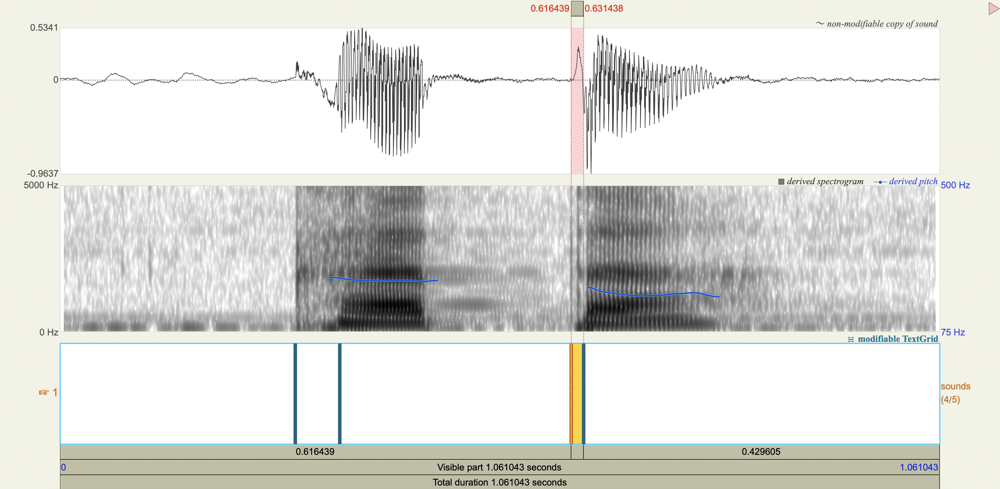
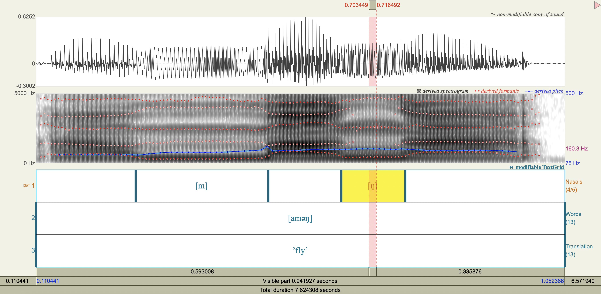

Acoustic and auditory properties of speech sounds#
[6]
LING 497 Phonetic Analysis: Articulation, Acoustics, Audition
The Pennsylvania State University
Revised
31 May 2023
Programming Environment#
Show code cell source
R.version.string # R.Version()
.libPaths()
packages <- c(
'gridExtra',
'magrittr',
'phonR',
'repr',
'scales',
'tidyverse',
'vowels'
)
# Install packages not yet installed
installed_packages <- packages %in% rownames(installed.packages())
if (any(installed_packages == FALSE)) {
install.packages(packages[!installed_packages])
}
# Load packages
invisible(lapply(packages, library, character.only = TRUE))
── Attaching core tidyverse packages ───────────────────────────────────────────────────────────────────────────────────────────────────────────────────────────────────────────────────────────────────────────────────────────── tidyverse 2.0.0 ──
✔ dplyr 1.1.2 ✔ readr 2.1.4
✔ forcats 1.0.0 ✔ stringr 1.5.0
✔ ggplot2 3.4.3 ✔ tibble 3.2.1
✔ lubridate 1.9.2 ✔ tidyr 1.3.0
✔ purrr 1.0.2
── Conflicts ─────────────────────────────────────────────────────────────────────────────────────────────────────────────────────────────────────────────────────────────────────────────────────────────────────────────── tidyverse_conflicts() ──
✖ readr::col_factor() masks scales::col_factor()
✖ dplyr::combine() masks gridExtra::combine()
✖ purrr::discard() masks scales::discard()
✖ tidyr::extract() masks magrittr::extract()
✖ dplyr::filter() masks stats::filter()
✖ dplyr::lag() masks stats::lag()
✖ purrr::set_names() masks magrittr::set_names()
ℹ Use the conflicted package (<http://conflicted.r-lib.org/>) to force all conflicts to become errors
Zürich German Vowels#
F1, F2, F3 observations#
Show code cell source
zurich_obs <- tibble(
vowel=c(
'i',
'ə',
'e',
'ə',
'ɛ',
'æ',
'y',
'i',
'ø',
'ə',
'œ',
'u',
'o',
'e',
'ɒ',
#'ə',
'ɛ',
'ə'
),
F1=c(
338.16187273454796,
480.7556674103058,
424.66126677493634,
538.1591157503162,
463.38752300516285,
598.999109334512,
302.9120756513271,
329.88108480049857,
353.53535533589655,
446.42169736756864,
556.2410818865662,
321.5929606643981,
449.0585597667322,
548.722113940993,
713.4208029323668,
#187.75184574884526,
554.6995123825042,
596.080905107178
),
F2=c(
2311.1416044007174,
1652.5340593428432,
2151.9276688278355,
1728.5344176651327,
1729.503265799448,
1485.5932775168874,
1627.843171042086,
2399.5911272550698,
1654.6924476415286,
1762.7512749856016,
1437.2258145596832,
684.098976469662,
642.100611328256,
1450.566949891477,
1564.501521174171,
#1712.5591032845734,
1966.4625997243281,
1591.8669959965687
),
F3=c(
3176.602722306821,
2390.0982442637264,
2750.2485307364627,
2455.5321017313545,
2380.506763486331,
2374.372678732871,
2094.16654646834,
3370.1561689997457,
2219.494510301964,
2305.844777075152,
2492.393145497456,
2599.4447548048465,
2626.705175493852,
2537.6593241203104,
3090.8585123150892,
#2703.87531734647,
2496.1083788172814,
2502.8814824649626
)
)
zurich_obs
| vowel | F1 | F2 | F3 |
|---|---|---|---|
| <chr> | <dbl> | <dbl> | <dbl> |
| i | 338.1619 | 2311.1416 | 3176.603 |
| ə | 480.7557 | 1652.5341 | 2390.098 |
| e | 424.6613 | 2151.9277 | 2750.249 |
| ə | 538.1591 | 1728.5344 | 2455.532 |
| ɛ | 463.3875 | 1729.5033 | 2380.507 |
| æ | 598.9991 | 1485.5933 | 2374.373 |
| y | 302.9121 | 1627.8432 | 2094.167 |
| i | 329.8811 | 2399.5911 | 3370.156 |
| ø | 353.5354 | 1654.6924 | 2219.495 |
| ə | 446.4217 | 1762.7513 | 2305.845 |
| œ | 556.2411 | 1437.2258 | 2492.393 |
| u | 321.5930 | 684.0990 | 2599.445 |
| o | 449.0586 | 642.1006 | 2626.705 |
| e | 548.7221 | 1450.5669 | 2537.659 |
| ɒ | 713.4208 | 1564.5015 | 3090.859 |
| ɛ | 554.6995 | 1966.4626 | 2496.108 |
| ə | 596.0809 | 1591.8670 | 2502.881 |
F1, F2, F3 averages#
zurich_avg <- zurich_obs %>%
group_by(vowel) %>%
summarize(F1=mean(F1),F2=mean(F2),F3=mean(F3))
zurich_avg
| vowel | F1 | F2 | F3 |
|---|---|---|---|
| <chr> | <dbl> | <dbl> | <dbl> |
| e | 486.6917 | 1801.2473 | 2643.954 |
| i | 334.0215 | 2355.3664 | 3273.379 |
| o | 449.0586 | 642.1006 | 2626.705 |
| u | 321.5930 | 684.0990 | 2599.445 |
| y | 302.9121 | 1627.8432 | 2094.167 |
| æ | 598.9991 | 1485.5933 | 2374.373 |
| ø | 353.5354 | 1654.6924 | 2219.495 |
| œ | 556.2411 | 1437.2258 | 2492.393 |
| ɒ | 713.4208 | 1564.5015 | 3090.859 |
| ə | 515.3543 | 1683.9217 | 2413.589 |
| ɛ | 509.0435 | 1847.9829 | 2438.308 |
Visualization of the F1-F2 acoustic vowel space#
options(repr.plot.width=10, repr.plot.height=10)
plt <- ggplot(zurich_avg, aes(x=F2, y=F1, label=vowel, color=vowel)) +
geom_text(size=10) +
scale_x_reverse(
position='bottom',
breaks=seq(0, 3000, 200)) +
scale_y_reverse(
position='left',
breaks=seq(0, 1000, 100)) +
labs(
x='F2 [Hz]\n',
y='F1 [Hz]\n',
title='Zurich German [F1 vs F2]') +
theme(
legend.position='none',
plot.title=element_text(hjust=0.5),
text=element_text(size=20)
)
suppressWarnings(print(plt))
{kind=link}
Analysis#
[1] Which pairs of vowels look like they are close together and are potentially confusable? (No less than three pairs.)
the near-open front unrounded vowel [æ] and the open front rounded vowel [œ]
the close-mid front unrounded vowel [e] and the open-mid front unrounded vowel [ɛ]
the close-mid front rounded vowel [ø] and the close front rounded vowel [y]
[2] Examine F3 for each pair of vowels. Do you think F3 might help speakers distinguish the vowel pairs from one another? Why or why not?
Show code cell source
zurich_avg %>%
select(vowel,F3) %>%
slice(1,5,6,7,8,11)
| vowel | F3 |
|---|---|
| <chr> | <dbl> |
| e | 2643.954 |
| y | 2094.167 |
| æ | 2374.373 |
| ø | 2219.495 |
| œ | 2492.393 |
| ɛ | 2438.308 |
[3] Do you think any other acoustic cues underlie the observed vowel differences? If so, which ones?
[4] Do you think an auditory plot would show differences not seen in the acoustic plot? Why or why not?
Quechua Stops#
Salasaca Quechua has a three-way contrast in stop phonemes between voiceless, voiceless aspirated, and voiced stops.
Measure the VOT
[p]
[ph]
[b]
[t]
[th]
[d]
[k]
[kh]
[g]
VOT observations#
Show code cell source
quechua_obs <- tribble(
~token,~stop, ~vot,
'pungu', 'p', 0.015893,
'pungu', 'g', 0.033120,
'patsuk', 'p', 0.009725,
'sipu', 'p', 0.021879,
'phaki', 'ph', 0.039716,
'phaki', 'k', 0.035454,
'bunga', 'b',-0.132969,
'bunga', 'g', 0.021412,
'wasibi', 'b', 0.0,
'taki', 't', 0.019589,
'taki', 'k', 0.036247,
'tuta', 't', 0.020096,
'tuta', 't', 0.012146,
'thuktu', 'th', 0.032266,
'thuktu', 't', 0.015750,
'dali', 'd',-0.105084,
'tshida', 'd', 0.0,
'kushni', 'k', 0.035806,
'wajku', 'k', 0.025784,
'khata', 'kh', 0.053653,
'khata', 't', 0.014999,
'gan', 'g',-0.165850,
'tawga', 't', 0.015944,
'tawga', 'g', 0.0,
)
quechua_obs
| token | stop | vot |
|---|---|---|
| <chr> | <chr> | <dbl> |
| pungu | p | 0.015893 |
| pungu | g | 0.033120 |
| patsuk | p | 0.009725 |
| sipu | p | 0.021879 |
| phaki | ph | 0.039716 |
| phaki | k | 0.035454 |
| bunga | b | -0.132969 |
| bunga | g | 0.021412 |
| wasibi | b | 0.000000 |
| taki | t | 0.019589 |
| taki | k | 0.036247 |
| tuta | t | 0.020096 |
| tuta | t | 0.012146 |
| thuktu | th | 0.032266 |
| thuktu | t | 0.015750 |
| dali | d | -0.105084 |
| tshida | d | 0.000000 |
| kushni | k | 0.035806 |
| wajku | k | 0.025784 |
| khata | kh | 0.053653 |
| khata | t | 0.014999 |
| gan | g | -0.165850 |
| tawga | t | 0.015944 |
| tawga | g | 0.000000 |
VOT averages#
Show code cell source
quechua_avg <- quechua_obs %>%
group_by(stop) %>%
summarize(vot=mean(vot))
quechua_avg
| stop | vot |
|---|---|
| <chr> | <dbl> |
| b | -0.06648450 |
| d | -0.05254200 |
| g | -0.02782950 |
| k | 0.03332275 |
| kh | 0.05365300 |
| p | 0.01583233 |
| ph | 0.03971600 |
| t | 0.01642067 |
| th | 0.03226600 |
Spectrograms#





Analysis#
[1] If you only saw the VOT patterns without any transcription, would you think there was a three-way contrast? Why or why not?
[2] Do you think that any acoustic cues other than VOT play a role in these contrasts?
Korean Fricatives#
Examine the phonetic correlates of a cross-linguistically unsual voiceless alveolar fricative constrast in Korean:
[sʰ] lenis aspirated fricative
[ss] fortis fricative
Which acoustic cues appear to be relevant to speaker-listeners’ perception in distinguishing the fricatives? Which ones don’t?
Acoustic cue measurements#
Show code cell source
korean <- tribble(
~token,~duration_ms,~F0_transition_Hz,~spectral_peak_Hz,~spectral_peak_dB,~H1_Hz,~H1_dB,~H2_Hz,~H2_dB,
'[sʰ]', 0.208705, 125, 4347.11, 28.5,235.19, 43.6,841.14, 39.6,
'[ss]', 0.213125, 128, 4449.29, 36.6,226.67, 46.2,834.28, 46.1
)
korean %>%
mutate(
H1_minus_H2_dB = H1_dB - H2_dB
)
| token | duration_ms | F0_transition_Hz | spectral_peak_Hz | spectral_peak_dB | H1_Hz | H1_dB | H2_Hz | H2_dB | H1_minus_H2_dB |
|---|---|---|---|---|---|---|---|---|---|
| <chr> | <dbl> | <dbl> | <dbl> | <dbl> | <dbl> | <dbl> | <dbl> | <dbl> | <dbl> |
| [sʰ] | 0.208705 | 125 | 4347.11 | 28.5 | 235.19 | 43.6 | 841.14 | 39.6 | 4.0 |
| [ss] | 0.213125 | 128 | 4449.29 | 36.6 | 226.67 | 46.2 | 834.28 | 46.1 | 0.1 |
Spectrograms and power spectra#

Central Arrernte Nasals#
Central Arrernte is an aboriginal Australian language that has nasal phonemes at many places of articulation.
Examine the formant and antiformant properties of the nasal. (Note: A final epenthetic vowel [a] may be heard at the end of consonant-final words pronounced in isolation, but is not included in the transcription.)
[m] bilabial
[ŋ] velar
[n̪] dental
[n] apicoalveolar
[ɲ] palatal
[ɳ] retroflex
F1, F2, F3 observations#
Show code cell source
arrernte_obs <- tribble(
~token,~nasal, ~F1_Hz, ~F2_Hz, ~F3_Hz,
'[aməŋ]', 'm',285.2174050473007,1542.6186253059136,2431.579956472647,
'[aməŋ]', 'ŋ',405.2672201535346,2535.1062570576146,2605.047099678809,
'[an̪ək]', 'n̪',280.2019747834746,1689.4191253832691,2615.092986757470,
'[aɲək]', 'ɲ',329.7587005075927,2379.2648129406225,3247.250092150123,
'[anək]', 'n',322.6723066332579,1699.6822986841912,2534.886655673502,
'[aɳək]', 'ɳ',349.1755943432434,2380.2786511502973,4208.140362545317,
'[aŋək]', 'ŋ',344.2634488457356,1173.2307520047038,2555.466245180057
)
arrernte_obs
| token | nasal | F1_Hz | F2_Hz | F3_Hz |
|---|---|---|---|---|
| <chr> | <chr> | <dbl> | <dbl> | <dbl> |
| [aməŋ] | m | 285.2174 | 1542.619 | 2431.580 |
| [aməŋ] | ŋ | 405.2672 | 2535.106 | 2605.047 |
| [an̪ək] | n̪ | 280.2020 | 1689.419 | 2615.093 |
| [aɲək] | ɲ | 329.7587 | 2379.265 | 3247.250 |
| [anək] | n | 322.6723 | 1699.682 | 2534.887 |
| [aɳək] | ɳ | 349.1756 | 2380.279 | 4208.140 |
| [aŋək] | ŋ | 344.2634 | 1173.231 | 2555.466 |
F1, F2, F3 averages#
Show code cell source
arrernte_avg <- arrernte_obs %>%
group_by(nasal) %>%
summarize(F1_Hz=mean(F1_Hz),F2_Hz=mean(F2_Hz),F3_Hz=mean(F3_Hz))
arrernte_avg
| nasal | F1_Hz | F2_Hz | F3_Hz |
|---|---|---|---|
| <chr> | <dbl> | <dbl> | <dbl> |
| m | 285.2174 | 1542.619 | 2431.580 |
| n | 322.6723 | 1699.682 | 2534.887 |
| n̪ | 280.2020 | 1689.419 | 2615.093 |
| ŋ | 374.7653 | 1854.169 | 2580.257 |
| ɲ | 329.7587 | 2379.265 | 3247.250 |
| ɳ | 349.1756 | 2380.279 | 4208.140 |
Spectrograms#

Terms#
Bibliography#
Breen & Dobson. (2005). [central arrernte nasals].
Fleischer, Jürg & Stephan Schmid. (2006). “Zurich German”. Journal of the International Phonetic Association.
Lee. (1999). [korean fricatives].
Masaquiza & Marlett. (2008). [quechua stops].